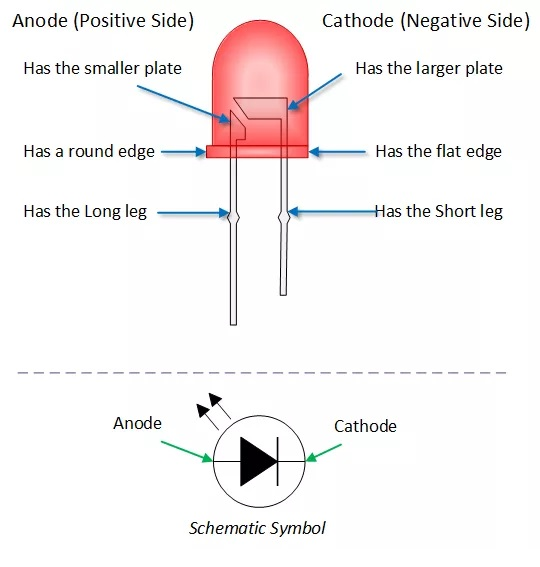
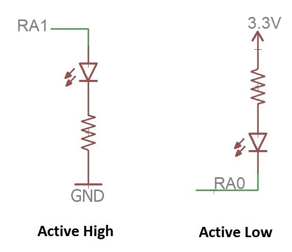

| Lecture: | 8 |
| Objective: | How to generate a varity of output bit sequences using delays. How to recognize input patters using delay structures. |
GPIO
In order to master control of the GPIO pins you will need three concepts, delay, manipulation of input and manipulation of output.A common input device - buttons and switches
Before jumping into code to check buttons and switches, let's take a moment to examine the language (nomenclature) used to describe switches and buttons.Switch nomenclature
- Poles: The number of separate circuits controlled by a switch.
- Throw: The number of discrete positions the switch can be put into.
- N.O. Normally Open. When the switch is not being actively manipulated the terminals of the switch are not touching, meaning that the switch terminals are in an open circuit configuration.
- N.C. Normally Closed. When the switch is not being actively manipulated the switch terminals are in contact with one another meaning the switch terminals are in a short circuit configuration.

The arrow in the figures above is a conductor that can be moved between the throws (circles on the right). In the case of a single throw switch ("ST" or those with only one circle on the right) the conductor either makes contact with the opposing conductor or is in an open circuit configuration. The default configuration of a single throw switch is referred to as either normally open (N.O.) or. normally closed (N.C.). The distinction between these two types of switches is the state of the connection between the two terminals of the switch when the button is not depressed. The terminal in a N.O. switch are not connected (open) when the button is not pressed. Hence they are normally open. Similiarilty the terminals of a N.C. switch are connected until the button is pressed. The dotted line in the figure represents the actuating mechanism that moves all the poles simultanously and in a cordinated fashion.
There are two ways that you can connect buttons to your circuit, active high and active low as shown in the circuit diagram below. The switches are shown in the open position which indicates that they are N.O.

The configuration determines what logic level is output when the button is pressed according to the following table.
| Active low | When the button is pressed, pin RA0 is attached to ground. This will cause Port A bit 0 to read a logic 0. When the button is not pressed, pin RA0 is weakly pulled-up to 3.3V through the resistor. This will cause Port A bit 0 to read a logic 1. When the button is pressed (active) the Port pin will read a logic 0 (low). Note, the resistor is necessary to prevent a short-circuit between 3.3V and GND when the button is pressed. A value of 10kΩ is typical. |
| Active high | When the button is pressed, pin RA1 is attached to 3.3. This will cause Port A bit 1 to read a logic 1. When the button is not pressed, pin RA1 is weakly pulled-down to 0V through the resistor. This will cause Port A bit 1 to read a logic 0. When the button is pressed (active) the Port pin will read a logic 1 (high). |
Digging deeper
In order to completly understand the operation of a switch and their associated resistors, you need to dig a little deeper and understand that is going on inside the chip. The following figure shows an active low switch connected to an I/O pin of the PIC. The pull-up resistor has a pretty typical value of 1kΩ Most chips these days have inputs that are connected to the gate a MOSFET. This MOSFET gate can be modeled as a pair of resistors (with very high resistances), one attached to 3.3V and the other to ground as shown. The analog voltage seen between these resistors is converted into a digital voltage by a "chip voltage detection circuit".
Now, let's ask ourselves what voltage the "chip voltage detection circuit" sees when the button is in its normally open configuration as shown. In this case, the 1kΩ and 1GΩ resistors tied to 3.3V are in parallel. You can use the parallel resistor equation to calculate the equivlent resistance as follows:
1 R_eq = ----------- 1 1 --- + --- 1kΩ 1GΩwhich is very close to 1kΩ because 1GΩ is so much larger than 1kΩ. Hence we will call the parallel combination 1kΩ Combining these two parallel resistors simplifies the circuit to a series circuit with a 1kΩ resistor (connected to 3.3V) connected to a 1GΩ resistor connected to ground. The voltage at the "chip voltage detection circuit" is:
1GΩ 3.3V * --------- 1kΩ + 1GΩWhich is esentially 3.3V. So, when the button is in a normally open configuration, the chip senses 3.3V and registers a logic 1. On the other hand, when the button is in its closed position, the GPIO pin is attached to ground causing the "chip voltage detection circuit" to reach 0v, registering logic 0.
Wait for button press
In order to synchronize the actions of the microcontroller to a human, we will frequently program the microcontroller to wait for a button press.In the following example you should assume that the push button is normally open and wired active high. The port pin associated with the button has been aliased, via #define BUTTON PORTAbits.RA0 to BUTTON. Thus when the push button is pressed, BUTTON will equal logic 1 and when the push button is not pressed, BUTTON will read a logic 0.
Second, we will connect an LED to an output pin on the microcontroller in a active high configuration. The port pin associated with the LED has been aliased, via #define LED LATAbits.LATA1 to LED. Assigning LED to 0 will turn the LED off, assigning a 1 will turn the LED on.
Finally, we need to recognize that the microcontroller is executing the instructions many millions of times faster than a user can press or release the button. With these assumptions in place lets look at a practical delay loop that you will see many times in our course.
1. LED = 0; // turn off the LED
2. for(;;) {
3. while(BUTTON == 0); // wait for a button press
4. while(BUTTON == 1); // wait for a button release
5. LED ^= 1; // toggle the LED
6. }
Let's walk through the program from top to bottom. To facilitate this discussion, I have added line numbers in the far left; please understand that these are not actually part of the program.
Line 1 turns the LED off. While not strictly part of the problem statement, its often a good idea to put indicators like Leeds into a know initial state at the start of a program.
Lines 2-6 form an infinite loop. Meaning that our computer will forever be checking the state of the button and turning the LED on and off.
Line 3 is a while-loop that executes its (empty) body while the button is not pressed. There are two important points to make here. First, the microcontoller may get stuck executing this while-loop many millions of times before the button is pressed. This is because the PIC is running at 64MHz, meaning that its executing 64 million (assembly) instructions per second. Hence, it can do a lot of checks every second. Second, while our program is executing this while-loop it is doing absolutely nothing except checking that button. This is the quintessential delay loop, synchronizing the execution of our program to the user's input by waiting and doing nothing until the user performs some task. You rarely see these types of statements in other programming classes because variables in those classes only change under your programs control, but in this class we will have variables that change based on actions performed outside your program.
Line 4 is a while-loop that executes its (empty) body while the button is pressed. Once again, the PIC is executing statements millions of times faster than the user can release the button. Hence, our program needs to wait until the button has been released before continuing.
Line 5 toggle the state of the LED after the button has been pressed and then released.
A common output device - LEDs
LEDs are polarized devices that, when current is passed through them, produce light. Polarized, means that the terminals of the device are not interchangable. In order to produce light, current must pass from the anode to the cathode. When looking at a LED there are several ways to distinguish between the anode and cathode as shown in the following image from Henry's Bench.
Note, if you try to pass current from the cathode to the anode, no current will flow and the LED will not produce light. There are two ways that you can connect LEDs to your circuit, active high and active low shown in the circuit diagram below. Note that both RA0 and RA1 are configured as outputs with the following instructions.
TRISAbits.TRISA0 = 0; // clearing TRIS bit makes RA0 an output
TRISAbits.TRISA1 = 0; // clearing TRIS bit makes RA1 an output

| Active high | When you set Port A bit 1 to logic 1, the pin RA1 goes to 3.3V.
This forward-bias the voltage across the diode (LED) causing current
to flow through the LED and illuminating it. When you clear Port A bit 1 to logic 0, the pin RA1 goes to 0V. This creates no voltage drop across the diode (LED). Thus no current flows through the LED and it does not illuminate. Thus, the LED illuminates (is active) when the Port bit is logic 1 (high). |
| Active low | When you clear Port A bit 0 to logic 0, the pin RA0 goes to 0V.
This forward-bias the voltage across the diode (LED) causing current
to flow through the LED and illuminating it. When you set Port A bit 1 to logic 1, the pin RA1 goes to 3.3V. This creates no voltage drop across the diode (LED). Thus no current flows through the LED and it does not illuminate. Thus, the LED illuminates (is active) when the Port bit is logic 0 (low). |
LATAbits.LATA0 = 0; // What does this command do? LATAbits.LATA0 = 1; // What does this command do? LATAbits.LATA1 = 0; // What does this command do? LATAbits.LATA1 = 1; // What does this command do?The resistor in the circuit diagrams is called a current-limiting resistor and its job is to limit the amount of current flowing through the LED. You can calculate a value for this resistor by consulting the datasheet for the LED and looking up Vf and Imax. Vf is the forward voltage drop you should expect across the LED when it's illuminated. Imax is the maximum continous current. For a red LED, typicall values would be Vf = 2V and Imax = 20mA. To be conservative, I run LEDs at about 30% of their maximum current. Try calulating the resistance value that would produce this much current through the resistor.
Delay routine
An inherent problem exists in all our interactions with micontrollers, they operate on time scales of microseconds, while we operate on a time scale of seconds. In order to breach this difference we need to slow down the microcontroller or speed-up our preception. In order to accomplish the second, we need to resort to artificial aides like oscilloscopes. The first is accomplished by having the microcontroller delay for periods of time. In the following section you can assume to have a function called "delay" which takes as an argument an uint8_t and produces a delay of consisting of that many "delay units". Its function prototype looks like: void delay(uint8_t delayUnits); While the exact duration of a delay unit is unimportant in our exercise, the fact that the microcontroller does nothing during the execution of the delay function is. We are intentionally telling the microcontroller to do nothing, and this can prove to be very useful when we have precise control over how long the microcontroller does nothing. To see how, let's proceed with the following examples.Generating output patterns
In order to program a microcontroller to control and communicate with the outside world, you will need to be able to program precise sequences of logic activity on GPIO pins. In the following exercises, the expression "LED" has been aliased via a #define statement to a GPIO pin and that pin has been configured as an output. The LED attached to the GPIO pin is wired so that it functions active high.| Static | |
| LED | Active High |
| Task | Illuminate LED |
| Code |
LED = 1; |
| Dynamic | |
| LED | Active High |
| Task | Toggle illumination level of LED |
| Code |
LED ^= 1; |
| Duration | |
| LED | Active High |
| Task | Illuminate LED for a 100 delay units. |
| Code |
LED = 1; delay(100); LED = 0; |
| Count | |
| LED | Active High |
| Task | Toggle LED illumination N times, hold each for 100 delay units. |
| Code |
LED = 0;
for (i=0; i < N; i++) {
delay(100);
LED ^= 1;
}
|
| Fixed Frequency, fixed duty cycle | |
| LED | Active High |
| Task | Toggle LED at 50% duty cycle with a period of 100 delay units. |
| Code |
LED = 0;
for (;;) {
delay(50);
LED = 1;
delay(50);
LED = 0;
}
|
| Fixed frequency, variable duty cycle | |
| LED | Active High |
| Task | Toggle LED at D% duty cycle with a period of 100 delay units. |
| Code |
LED = 0;
for (;;) {
delay(D);
LED = 1;
delay(100-D);
LED = 0;
}
|
| Sequence | |
| LED | Active High |
| Task | Generate a LED illumination sequence. Each element in the sequence has two characteristics, the LED illumination state and the duration of this state. |
| Code |
uint8_t sequence[N][2] = { {ON, 100}, {OFF, 20}, ...};
LED = 0;
for (i=0; i < N; i++) {
LED = sequence[i][1];
delay(sequence[i][0]);
} // end for
|
Test your understanding
You can find the solutions embedded in the "source code" for this web page by right mouse clicking on this web page and selecting "view source". The solutions are in HTML comments.- Let's apply these concepts by configureing our PIC with the active high LED connected to RA1 and the active low push button connected to RA0. Let's write a program that illuminates the LED when the button is pressed. Remember that when working with input pins that are functionally multiplex with analog to digital converter channels you must configure inputs to be digital by clearing the associated analog select bit. We do not need to configure the analog select bit when a pin is configured to be an output.
- Write a code snippet that reads an active-low button on RA5 and illuminates an active-low LED connected to RA3 only when the button is pressed.
- Write a code snippet that reads an active-high button on RA5 and illuminates an active-low LED connected to RA3 only when the button is pressed.
- Write a code snippet that creates a 50% duty cycle waveform with a period of D delay units. Do not use the divide operator and instead use shifts.
- Write a code snippet that creates a 12.5% duty cycle waveform with a period of D delay units. Do not use the divide operator and instead use shifts.
- Write a code snippet that lights the LED whenver the active high push button is pressed an even number of times.
- Write a code snippet that generates a increases the duty cycle of the LED by 12.5% everytime the button is pressed. The duty cycle should increase starting from 0% to 100% and then back to 0% to increase again. The period of the waveform should be D delay units (D is assumed to have type uint8_t. If you create variable, include their type definitions.